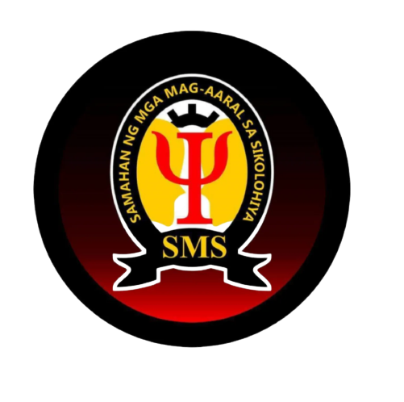
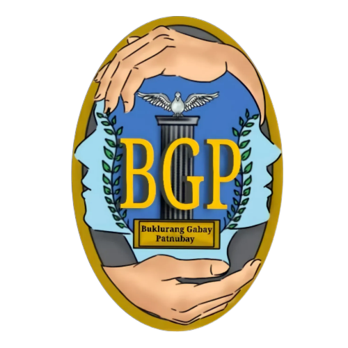

College of Science Student Body
is known to be a legitimate Mother Organization of the College of Science of the University of Rizal System Morong Campus, run by the students, for the students, and of the students, who aim for the betterment of each and everyone under every program of the College of Science as spearheaded by the adviser, Dr. Ricky R. Ariston. Their objectives are the following.
The Objectives of the Organization shall be:
a) To establish harmonious relationship, unity and cooperation among the members
in pursuit of a common goal;
b) To be the partner of the college in attaining its goals and objectives;
c) To be the partner of Parent Auxiliary Organization(COSPAO) in promoting the
welfare of the students;
d) To develop social conscience, dedicated leadership, honor, nationalism and
discover hidden talents and abilities of every individual member;
e) To organize activities that shall promote the University and unleashed what is
beyond each and every student;
f) To unite the different programs/courses of the college.
Their activities accomplished for this academic year are the ginoo at binibing agaham held at eulogio amang rodriguez tanghalang sining at february 2023 and the College of science week that held in our precious university.
You can reach them at their official email
collegeofsciencestudentbody@gmail.com

The Essence
the official publication of college of science headed by their Editor in chief Mr. Aldrin Bayoca and Prof. Rico Flores as their adviser. The organization objectives and principles are the following.
DECLARATION OF PRINCIPLES AND OBJECTIVES
Section 1. THE ESSENCE is the official publication of the College of Science and as such it
adheres to the vision, mission, goals and objectives of the college and the University of Rizal
System.
Section 2. THE ESSENCE is the response to the need of providing avenues for collective and
individual expressions to the College of Science students as well as the faculty and personnel.
Section 3. It adheres to the declared State policy to uphold and protect the freedom of the press
of the campus level and to promote the development of campus journalism as a means of
strengthening ethical values, encouraging critical and creative thinking and developing moral
character and personal discipline of Filipino youth. In furtherance of this policy, THE ESSENCE
shall undertake various programs and projects aimed at improving the journalistic skills of
concerned students and promoting responsible and free journalism.
Secton 4. It is therefore the duty of the college/university heads, adviser and personnel involved
in the campus journalism program, policies and objectives as provided in the Republic Act 7079
and embodied as principles in the Constitution as well as relevant policies under existing law.
Thier latest activity is where they conducted the “ LATHALA” , its tackles about technical writing, this event also attended by the students who are aspiring to be a journalist.
You can message them at their official email
the.essence.cos@gmail.com

SMS (SAMAHAN NG MAG-AARAL SA SIKOLOHIYA)
This organization is made up by psychology students headed by their president Mr. Jayson O. Del Rosario and their adviser Prof. Czarina Ann B. Alfonso. Their objectives are the following:
The URSM-SMS is committed to:
a. Promote awareness to students regarding the theories and practices of
Psychology.
b. Providing psychological knowledge and its application is essential to living.
c. Attract prospective students to perform psychological studies and researches;
d. Establish rapport among members of the student organization through the
activities that enhance humane interest.
You can reach them by messaging at their official email
ursmorongsms@gmail.com
Mathematics Circle
The Mathematics Circle headed by Dr. Wilma Program Head of BS Mathematics and Kian Kylle Repolona as their Vice President and presiding officer gives the college of science especially bs mathematics an exciting and challenging events this is why their program is very fun, on the other hand their objectives are the following:
The objectives of the organization are to:
1. Help enhance the mathematical abilities of the College of Science students.
2. Develop leadership potentials of the BS Math students.
3. Poster camaraderie among BS Math students.
You can mesage them at this
mathematicscircle.ursm@gmail.com

Buklurang Gabay Patnubay (BGP)
Buklurang Gabay Patnubay is establish by the students of BS Human Services with their adviser Dr. Florencia Bautista and Lenard Polintan as their President with their set of activities accomplished and objectives they really deserve to be recognize as a organization. The following are their objectives.
A. Enhanced the knowledge of the students particularly BGP Community
through active participation in local fairs, contest in other activities
B. Promote the educational advancement through intellectual and social
activities.
C. Foster the involvement of the students in upgrading the quality of
College of Science education and in improving its atmosphere for
learning.
Biology Student Organization
(BIOSA)
BIOSA is created by biology students with Prof. Edmund Capuz as their adviser and Jinoel Matawaran as their President these future biologist has their own activities for their college particularly on their program.
Their objective are as follows
a. To stimulate science consciousness in the community through active participant in
local affairs, contest and other activities;
b. To promote educational advancement through intellectual and social activities; and
c. To poster and develop involvement of the students in upgrading the quality of
Science Education and in improving its atmosphere for learning including the
faculties and equipment
You can message them through their email
biosa.org@gmail.com

Technology Innovators through Programming and Algorithm Sciences (TIPA)
Technology Innovators through Programming and Algorithm Sciences (TIPA) is an organization for the Bachelor of Science in Computer Science students. It is established on the year 2022, 1 year after the course BSCS was introduced in the University of Rizal System - Morong Campus. Its goal is to unite the BSCS students and to give them activities and programs to look forward to throughout the year. Also this organization is headed by Prof. Jeorge Dela Cruz as their adviser and Michelle Pagurayan as their Executive officer.
Most of their activities are technical team for the university but they also have their activities particularly in their college and program. The organization objectives are the following:
The objectives of the Technology Innovators through Programming and Algorithm Sciences (TIPA) are as follows:
Develop a more fraternal and harmonious relationship among the students of the Bachelor of Science in Computer Science program.
Develop and enhance the mental ability of its members through the different activities in terms of Information Technology related matters.
Develop the social value of its members through the different activities/programs.
Express different knowledge in computers and share it to others.
To describe the relationship of people to computers and the essential roles of human development, implementation and use of computers.
To provide additional knowledge and information regarding some matters which are not to be tackled or encountered in regular computer lectures/classes.
To help the Alma Mater in the propagation of competitive computer students.
You can message them through their email
ursmorong.tipa@gmail.com
College of Science Athletic Association (COSAA)
This organization is built up for College of Science Athletic students with the help of the their adviser Prof. Donna Barredo most of their activities are for COS athletic Student they even collab with the university itself. The objective of this organization is to build the student’ spirits in sports and to enhanced their physical traits as well as their mental traits.
You can message them through their email
cosaaursm@gmail.com